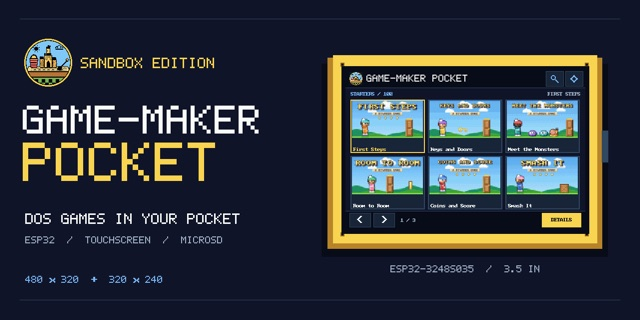

Game-Maker Pocket
DOS games in your pocket on a cheap ESP32 touch screen

A pocket player for Game-Maker: Sandbox Edition games on cheap ESP32 touch-screen boards, with a web flasher that installs it from the browser.
Live demo Source Game-Maker OS
Executive summary
Why it exists
I wanted to carry my Game-Maker games in a pocket-sized player. The ESP32 touch-screen boards sold cheaply online have a screen and a microSD slot, so the question was how much of a 1990s DOS game could fit on one.
Outcome
Two boards run it from a flashed image, with the Starters in the board's own flash and more games on a microSD card in a /pocket folder. The web flasher offers a Player-only, a Starter-courses or a Player-plus-starter-games install per board, and the host tests cover the play loop, cards and controls on the Mac. It pairs with Game-Maker OS for the Raspberry Pi.
My role
Designer, director and maintainer. Built with AI coding assistance from Claude (Opus 5.5 and Sonnet 5.5) plus reviews by an agent on my Linux machine. The art, including the social preview and favicon, was made with ChatGPT GPT-6.1 Sol from my directions.
Technical overview
How it works
Firmware in C++ for two boards, the ESP32-2432S028 (2.8 inch) and the ESP32-3248S035 (3.5 inch). It plays the Starter lessons from the games' real DOS files, packed small, and a library from a microSD card with categories, search and a library browser. It has touch controls for fingers and a stylus, a settings screen, a status strip and the PC speaker sounds. A first-start setup walks through each display's mirror, orientation, colors and touch calibration. The packs are made by Game-Maker: Sandbox Edition. A GitHub Pages install page, using ESP Web Tools, lets a visitor pick a board and flash it from Chrome or Edge.
Hard parts
The play rules had to be ported to a board with 4 MB of flash while still matching the web engine, which follows PLAYGAME. The 2.8 inch boards also come in several display revisions, so the screen can be mirrored, rotated or the wrong color until the setup is done. Sound is the PC speaker only for now, with no Sound Blaster clips or music yet.
How it was made
The firmware, tests and install page were written with Claude Code and reviewed by an agent on my Linux machine. The social preview, favicon and hand art came from ChatGPT and my directions, and Claude drew the small category icons in code.